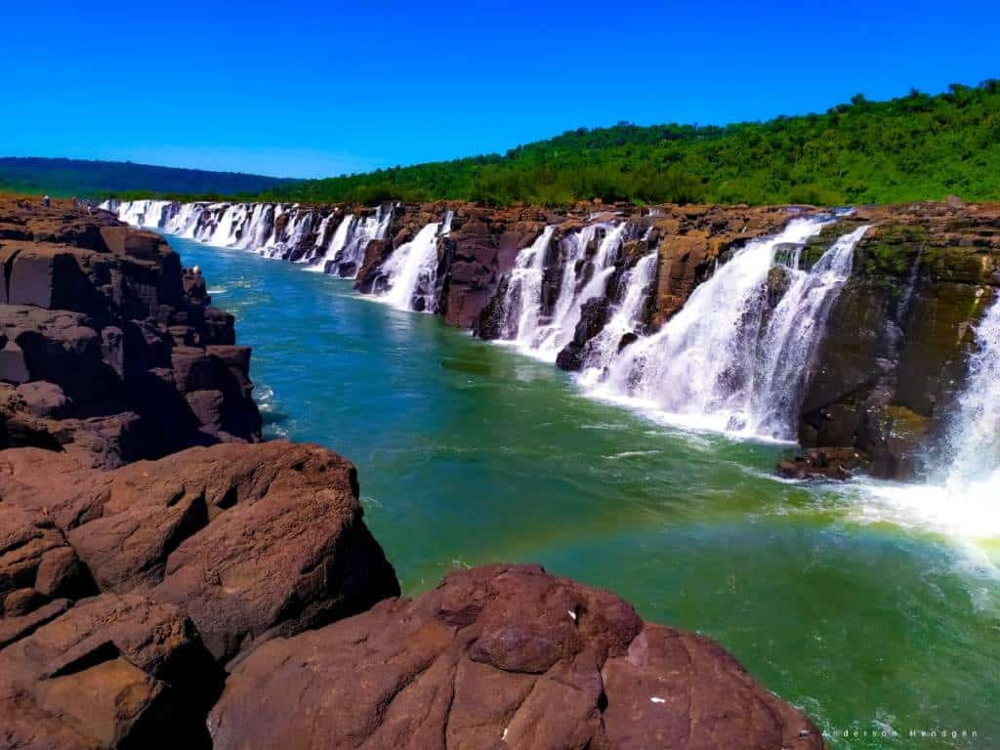

¡Salto Moconá!
El parque Provincial Moconá se encuentra dentro de la Reserva de la Biosfera Yabotí
("Tortuga" en Guarani), en la región centro este de Misiones, en El Soberbio, Misiones.
Dentro de su extensión territorial se contempla el río Uruguay que desde esa altura sirve de frontera entre Argentina y Brasil. .

Dentro de nuestra hermosa ruta encontrarás alternativas para llegar
hasta el Parque Provincial , desde Posadas, Iguazú, San José o San Pedro,
nuestro mapa lo guiará a través del sistema de Google Maps.